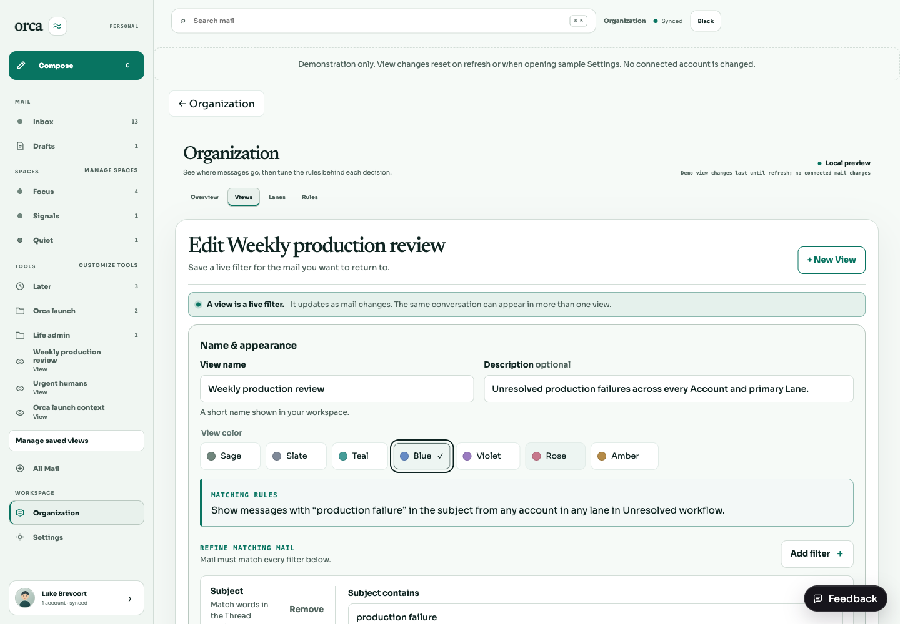
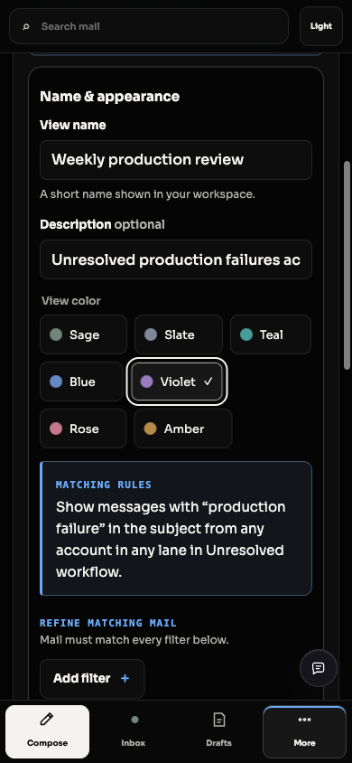
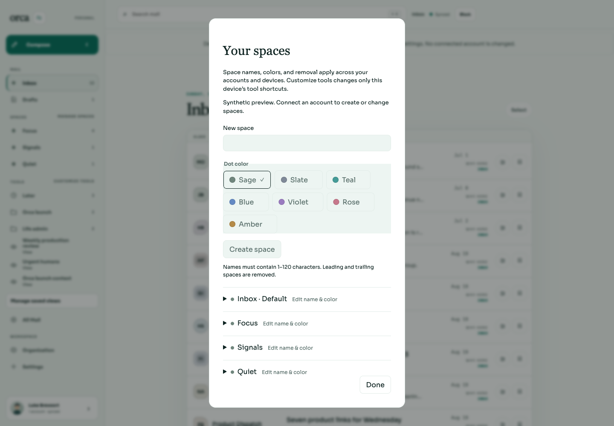
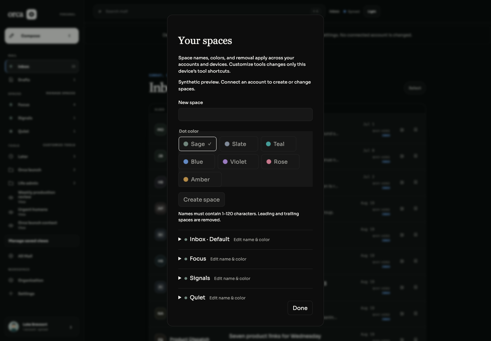

Spaces and views share seven presets: Sage, Slate, Teal, Blue, Violet, Rose and Amber. Each has a name and selection checkmark. Older custom colors are preserved as “Existing color” until explicitly replaced.
Validation: 69 focused space/view tests pass, including saved custom-color preservation and preset save/reopen. Full workspace typecheck passes. Native keyboard selection, visible focus, light/dark default/hover/selected/disabled states and 390px wrapping checked. Space preview remains intentionally read-only; no provider writes.
Try it: open a view → Edit → choose a named color → Save changes → reopen. In Manage spaces, the same palette appears under Dot color.



